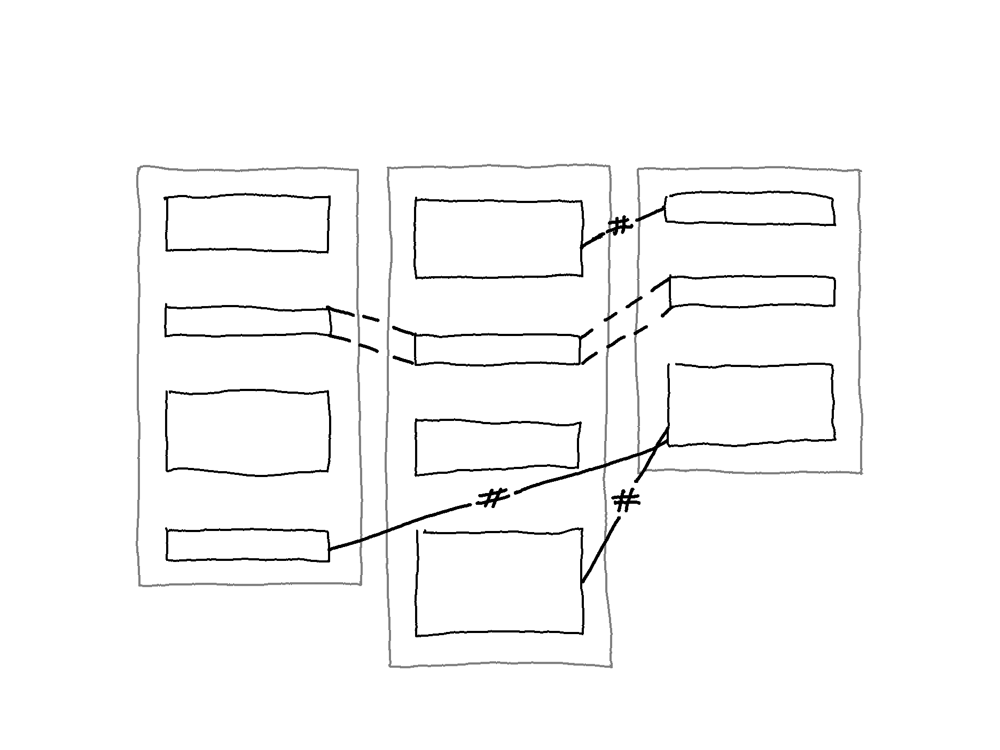
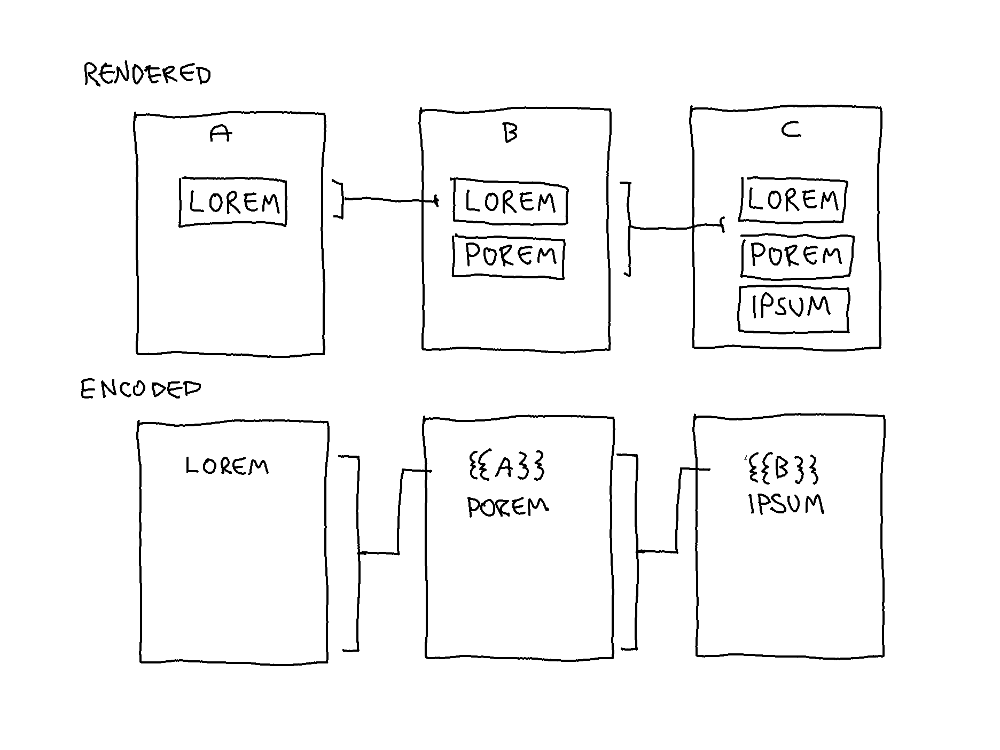
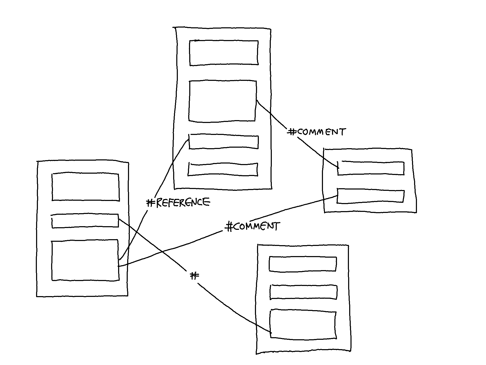

Concept Design: Documents, Content Items, and Link Types
The intent here is to clarify which concepts are to become components in the construct and how those components interact.
Questions are:
- What can documents contain?
- How are links created, and which link types?
A Document and Its Content Items
A document is defined in general terms as a container of content items to which links can be attached on the level of the document and the level of the content item. The representation of a document can change in each view mode.
A document can contain a single or multiple content items which may vary in modality (e.g., text, image, sound). Content items may vary in modality and may be further distinguished by type. In conventional terms, a paragraph, for example, is a content item; a quote within a paragraph is also a content item; a list and a list item are content items.
Link Types
Two main link types can be established between content items: transclusions and those that are not transclusions, called tag links which can include a descriptive label or remain empty.
- Transclusion —-
- Tag link –#–

1. Transclusion —-
A transclusion is created when a document or some of its content items are included in another document.[^excerpts] Transclusions are reused content items with visual links and thus offer a way to retrieve “the origins and context of quotations, excerpts and anthologized materials, and content transiting between versions” (Nelson 1999).
The image below shows the concept of transclusion on a technical level.

2. Tag link –#–
Tag links are created by connecting two separate content items and can include a descriptive label (#Label) or remain empty (#). Utilizing the common usage of hashtag1 as a means to categorize content, tag links enable people to organize and filter links based on their developed taxonomy. Examples of tag links are given below.

Sources
Nelson TH. Xanalogical Structure, Needed Now More than Ever: Parallel Documents, Deep Links to Content, Deep Versioning, and Deep Re-Use. ACM Computing Surveys. 1999;31(4):32.
Endnotes
The word hashtag refers to the symbol # (as popularized by Twitter) and combines the word hash from the hash mark and the word tag as it is used to label something belonging to a specific category. ↩